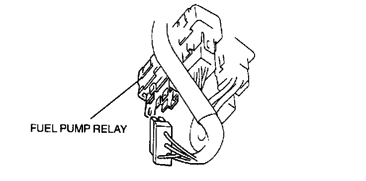

Before Repair Procedure
(BEFORE REPAIR) FUEL LINE SAFETY PROCEDURESWARNING: Fuel vapor is hazardous. It can easily ignite, causing serious injury and damage. Always keep sparks and flames away from fuel.
- Fuel in the fuel system is under high-pressure when the engine is not running.
WARNING: Fuel line spills and leaks are dangerous. Fuel can ignite and cause serious injuries or death and damage. Fuel can also irritate skin and eyes. To prevent this, always complete the following "Fuel System Repair Safety Procedure".
1. Remove the fuel-filler cap and release the pressure in the fuel tank.

2. Disconnect the fuel pump relay connector (6-pin type connector: 4. terminal) located above the accelerator pedal.
3. Start the engine.
4. After the engine stalls, crank the engine several times.
5. Turn the ignition switch off.
6. Install the fuel pump relay.